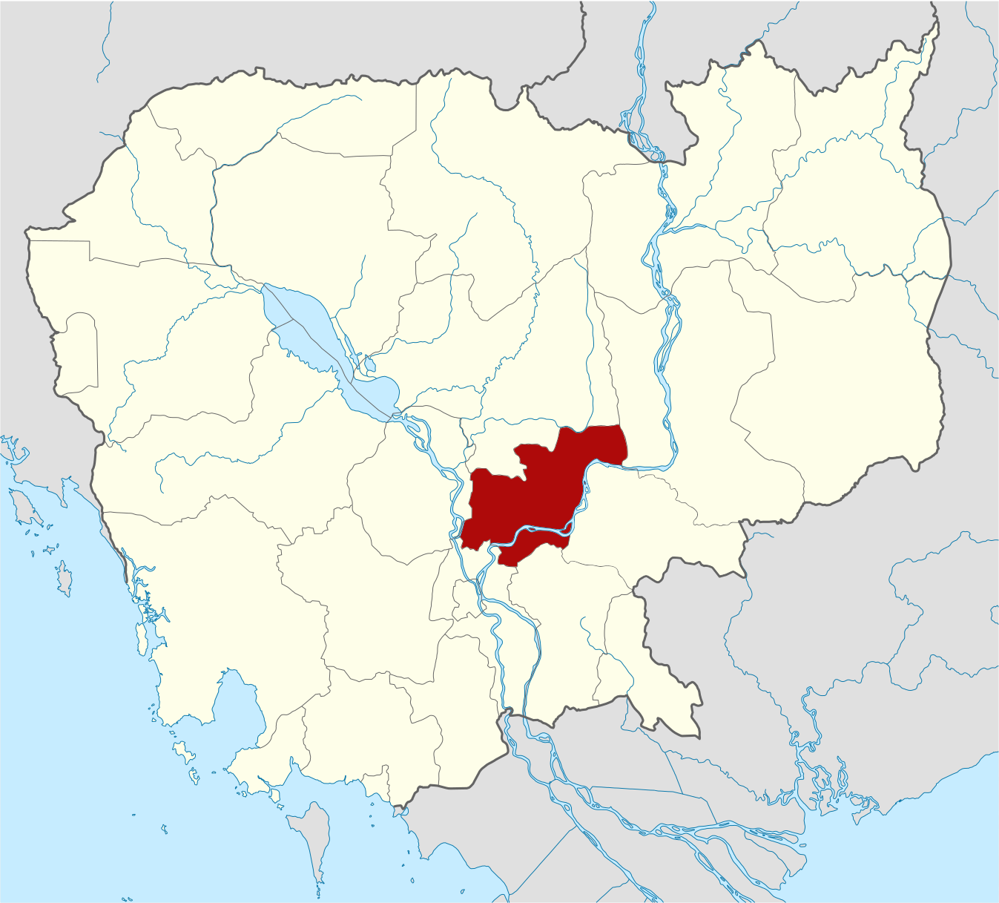
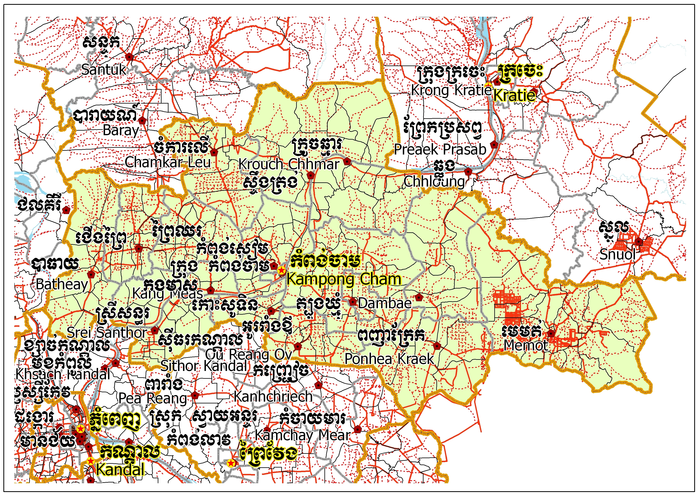
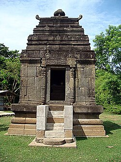
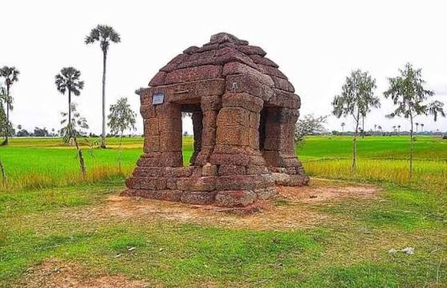
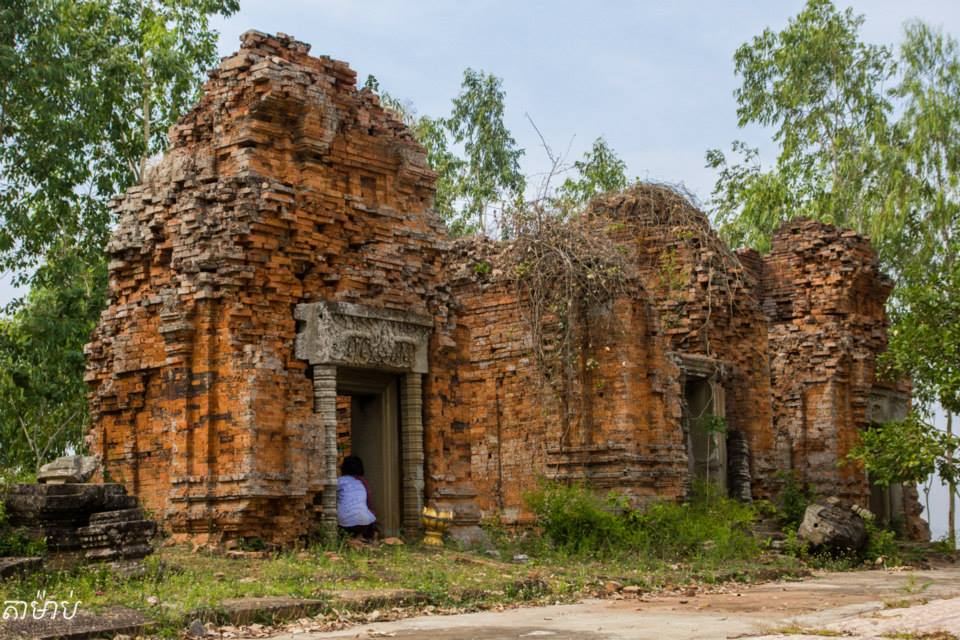
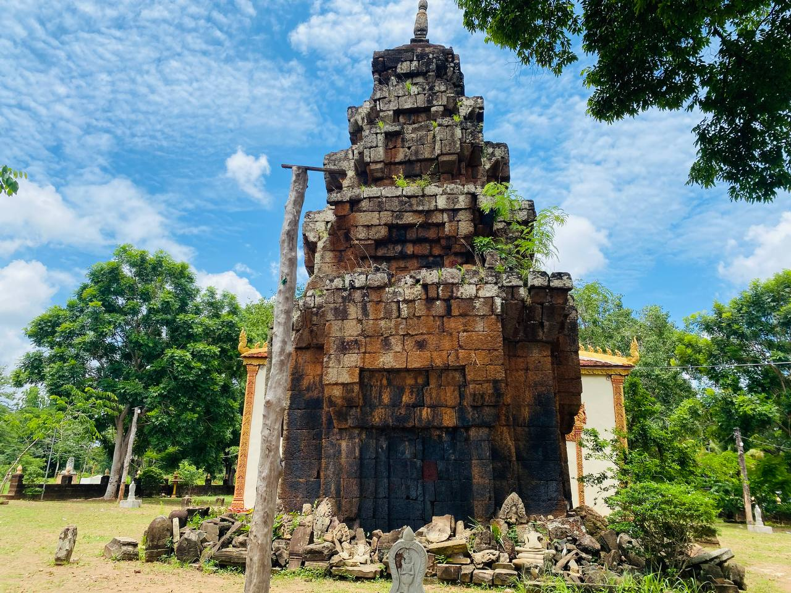
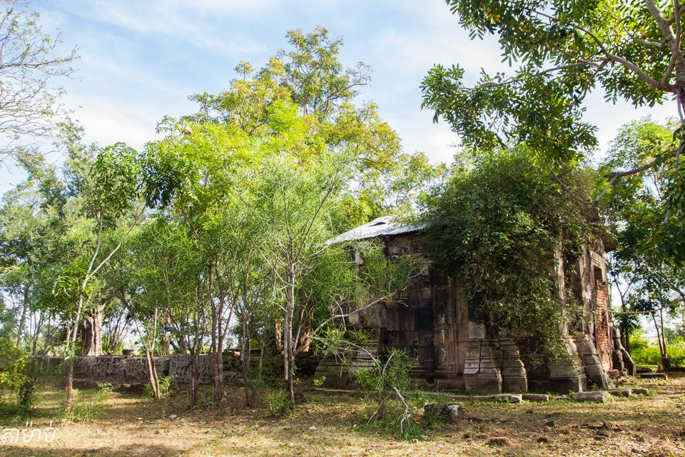
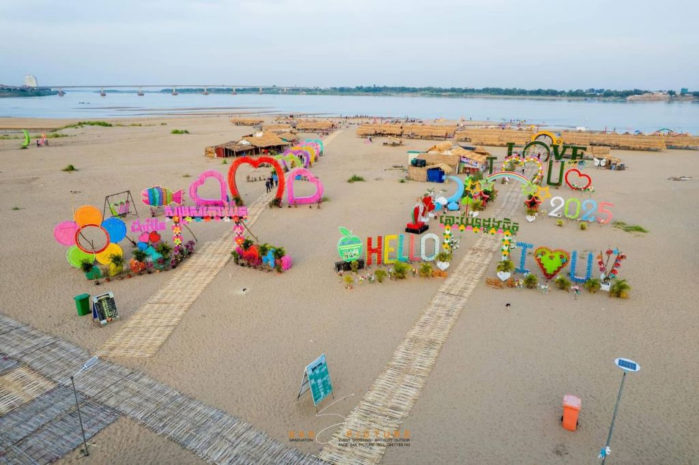
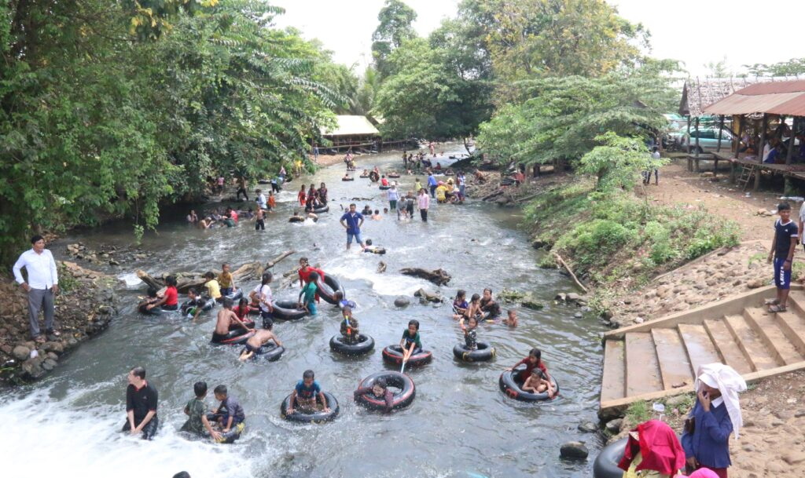

Kampong Cham
← ត្រឡប់ទៅផែនទីខេត្តកំពង់ចាម គឺជាខេត្តមួយរបស់ប្រទេសកម្ពុជា ដែលស្ថិតនៅលើដីទំនាបកណ្តាលនៃទន្លេមេគង្គ។ មានព្រំប្រទល់ជាប់ខេត្តកំពង់ឆ្នាំងនៅខាងលិច ខេត្តកំពង់ធំនិងខេត្តក្រចេះខាងជើងនិងឦសាន ខេត្តត្បូងឃ្មុំនៅខាងកើត និងខេត្តព្រៃវែងនិងខេត្តកណ្តាលនៅខាងត្បូង។ ខេត្តកំពង់ចាមត្រូវបានបែងចែកជាផ្លូវការជាពីរ ខេត្តនៅថ្ងៃទី៣១ ខែធ្នូ ឆ្នាំ២០១៣ ដីទាំងអស់នៅខាងលិចទន្លេមេគង្គនៅតែជាខេត្តកំពង់ចាម នៅដីនៅខាងកើតទន្លេមេគង្គក្លាយជាខេត្តត្បូងឃ្មុំ។ មុនពេលការបែងចែកនេះ ខេត្តកំពង់ចាមបាន លាតសន្ធឹងទៅខាងកើតជាប់ព្រំដែនអន្តរជាតិជាមួយប្រទេសវៀតណាម ជាខេត្តធំទី១១ នៃប្រទេសកម្ពុជា ហើយមានប្រជាជនចំនួន ១ ៦៨០ ៦៩៤ នាក់ គឺជាខេត្តដែលមានប្រជាជនច្រើនជាងគេនៅក្នុង ប្រទេសកម្ពុជា។ ខេត្តកំពង់ចាមមានទីរួមខេត្តកំពង់ចាមជាទីក្រុង។មិនតែប៉ុណ្ណោះមានទាំងធនធានធម្មជាតិដូចជា ព្រៃ ភ្នំ ទីវាល ទន្លេ បឹង និងប្រភពទឹកផ្សេងៗ ដែលជាសក្តានុពលសម្រាប់វិស័យទេសចរណ៍ និងការវិនិយោគ។ ខេត្តកំពង់ចាមមានតំបន់ទេសចរណ៍ដូចជា ប្រាសាទនគរបាជ័យ ប្រាសាទភ្នំជើងព្រៃ ប្រាសាទភ្នំហាន់ជ័យ ប្រាសាទព្រះធាតុទឹកឆា ប្រាសាទភ្នំត្រប់ ភ្នំប្រុស ភ្នំស្រី កសិទេសចរណ៍ថ្មដាទឹកឆា និងឆ្នេរខ្សាច់កោះប៉ែនជាដើម។


ខេត្តកំពង់ចាមគឺជាខេត្តមួយ ដែលមានវ័យចំណាស់មួយនៅក្នុងប្រទេសកម្ពុជា ហើយស្ថិតនៅភាគខាងជើងឆៀងខាងកើតរាជធានីភ្នំពេញ។ខេត្តនេះមានចម្ងាយប្រហែល ១២៤គីឡូម៉ែត្រពីរាជធានីភ្នំពេញ ដែលកាត់តាមផ្លូវជាតិលេខ៦ និងផ្លូវជាតិលេខ៧។ ខេត្តកំពង់ចាមមានផ្ទៃដីចំនួន ៤៥៤៩គីឡូម៉ែត្រការ៉េ ដែលមានក្រុងចំនួន ១ ស្រុកចំនួន ៩ ឃុំចំនួន១៦៩ សង្កាត់ចំនួន៤ ភូមិចំនួន១៧៥៨។ កាលដើមឡើយខេត្តកំពង់ចាមក្រុង ចំនួន២ និងស្រុកចំនួន១៤ នៅដើមអាណត្តិនៃរាជរដ្ខាភិបាលកម្ពុជាបានបំបែកខេត្តនេះ ជាពីរនៅថ្ងៃទី៣១ ខែធ្នូ ឆ្នាំ២០១៣ ដោយព្រះករុណាព្រះបាទនរោត្តម សីហមុនី ព្រះមហាក្សត្រនៃព្រះរាជាណាចក្រកម្ពុជា។ ខេត្តនេះស្ថិតនៅវាលទំនាបកណ្តាលនៃទន្លេ មេគង្គ ដែលមានព្រំប្រទល់ខាងលិចជាប់ខេត្តកំពង់ឆ្នាំង ខាងជើងជាប់ខេត្តកំពង់ធំ និងខេត្តក្រចេះ ខាងកើតជាប់ខេត្តត្បូងឃ្មុំ ខាងត្បូងជាប់ខេត្តកណ្តាល និងខេត្តព្រៃវែង។
កំពង់ចាមត្រូវបានបែងចែកជា១០ ស្រុក-ក្រុង ដែលក្នុងនោះបានបែងចែកតទៅទៀតជាឃុំ-សង្កាត់ បន្ថែមពីនោះឃុំ-សង្កាត់ត្រូវបានបែងចែកជាភូមិ។
ការបោះឆ្នោតសកលចុងក្រោយត្រូវធ្វើឡើងនៅថ្ងៃ ២៨ កក្កដា ២០១៣ ដែលគណបក្សសង្គ្រោះជាតិបានឈ្នះភាគច្រើនជាមួយសំឡេងឆ្នោតប្រជាជន ៥១,៨៨% (៤៥៧ ៨១៩) បើប្រៀបធៀបនឹង គ.ប្រ.ក. ដែលមានសំឡេង (៣៧៦ ១៨២)។ គ.ស.ជ.បានឈ្នះ ១០ អាសនៈ ខណៈដែលគ.ប្រ.ក.ឈ្នះបាន ៨ អាសនៈក្នុងសភា។ កំពង់ចាមធ្លាប់ជាខេត្តមួយក្នុងចំណោមខេត្តទាំងប្រាំដែលគាំទ្រគណបក្សប្រឆាំង គ.ស.ជ. នៅឆ្នាំ ២០១៣។
ចំនួនប្រជាជនសរុបគឺ ឬ % នៃចំនួនប្រជាជនសរុបនៃប្រទេសកម្ពុជា ១៣ ៤១៣ ៨៩២ នាក់ (២០០១, ទិន្នន័យខេត្ត) ជាមួយនិងកំណើនប្រជាជន ចំនួន ២,៤០%, ដែលក្នុងនោះ នាក់ ឬ ជាបុរស និង នាក់ ឬ % ជានារីភេទ។ នៅក្នុងចំនួនខាងលើនេះដែរ នាក់ ឬ % ជាកសិករ, នាក់ ឬ % ជាអ្នកនេសាទ, នាក់ ឬ % ជាអ្នកជំនួញ, នាក់ ឬ % ជា អ្នកធ្វើការរាជការ។ សន្ទភាពជាមធ្យមនៃខេត្តនេះ គឺ នាក់ ក្នុងមួយសហាតិមាត្រការ៉េ។

ប្រាសាទហាន់ជ័យ

ប្រាសាទគុកតាព្រហ្ម

ប្រាសាទភ្នំត្រប់

ប្រាសាទព្រះធាតុ

ប្រាសាទព្រះធាតុបារាយណ៍

កោះប៉ែន គឺជាកោះធំមួយនៅកណ្តាលទន្លេមេគង្គ ភាគខាងត្បូងក្រុងកំពង់ចាម វាមានចម្ងាយប្រហែល ៣គ.មពីក្រុងកំពង់ចាម។ សណ្តូកខ្លួនជាច្រើនគីឡូម៉ែត្រនៅតាមដងទន្លេមេគង្គ កោះប៉ែនផ្តល់ជាភូមិកររបស់អ្នកស្រុករាប់រយគ្រួសារដែលកំពុងរស់នៅលើកោះ។ កោះប៉ែន គឺជាគោលដៅទេសចរណ៏បែបសហគមន៍ និងបានបង្ហាញពីជីវភាពរស់នៅរបស់ប្រជាជនតាមដងទន្លេ។ អ្នកស្រុកកោះប៉ែន រស់នៅដោយអាស្រ័យផលដំណាំលើទឹកដីកោះដ៏សម្បូរជីជាតិនេះ ក្នុងនាមកសិករ ខ្លះជាអ្នកនេសាទ និងខ្លះប្រកបការងារសិប្បកម្មតាមប្រពៃណីពីដូនតា។ ដំណើរឆ្ពោះទៅកាន់ទឹកដីកោះប៉ែន អ្នកស្រុកត្រូវជិះទូកដរឆ្លងនៅរដូវទឹកឡើង និងឆ្លងតាមស្ពានប្រដីសឫស្សីដ៏វែងអន្លាយកាត់ទន្លេមេគង្គនារដូវប្រាំង។ កោះប៉ែនមានទេសភាពស្រស់បំព្រងនាគ្រប់រដូវកាលមានឆ្នេរខ្សាច់ស្អាតល្អដែលធ្វើឲ្យភ្ញៀវទេសចរពេញចិត្តទៅកម្សាន្ត និងងូតទឹកលេងនៅលើឆ្នេរខ្សាច់នារដូវប្រាំង និងទទួលទានអាហារផងដែរ។
រមណីយដ្ឋានទឹកឆាមានទីតាំងស្ថិតនៅក្នុងភូមិថ្ម ឃុំក្រូច ស្រុកព្រៃឈរ ខេត្តកំពង់ចាម។ រមណីយដ្ឋាននេះមានចម្ងាយប្រហែល៤២គីឡូម៉ែត្រពីទីរួម ខេត្តកំពង់ចាម។ តំបន់នេះសក្តានុពលទាក់ទាញភ្ញៀវទេសចរណ៍រួមមានប្រាសាទបុរាណ និងធារាសាស្រ្តសម្រាប់ស្រោចស្រពដីស្រែកសិកម្មភាគច្រើននៃភ្ញៀវទេសចរគឺនិយមទៅមុជទឹកដ៏ថ្លាយង់ ដែលហូរចេញពីប្រភពទឹកក្រោមដី។ នៅតំបន់នោះមានវារីអគ្គីសនីតូវមួយ ដែលស្ថានាឡើងតាំងថ្ងៃទី១៣ ខែមិថុនា ឆ្នាំ២០០៣ ដោយជំនួយហិរញ្ញវត្ថុពីរាជរដ្ឋាភិបាលជប៉ុន។ នៅលើមាត់ទឹកមានប្រាសាទបុរាណមួយឈ្មោះថា ប្រាសាទព្រះធាតុទឹកឆា
